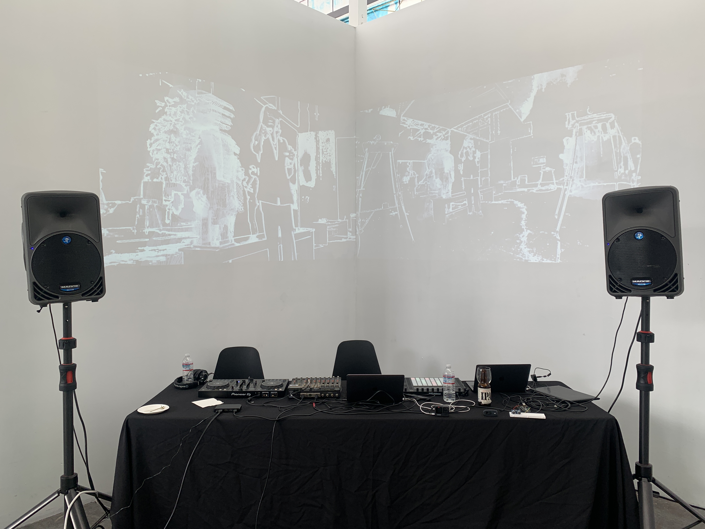
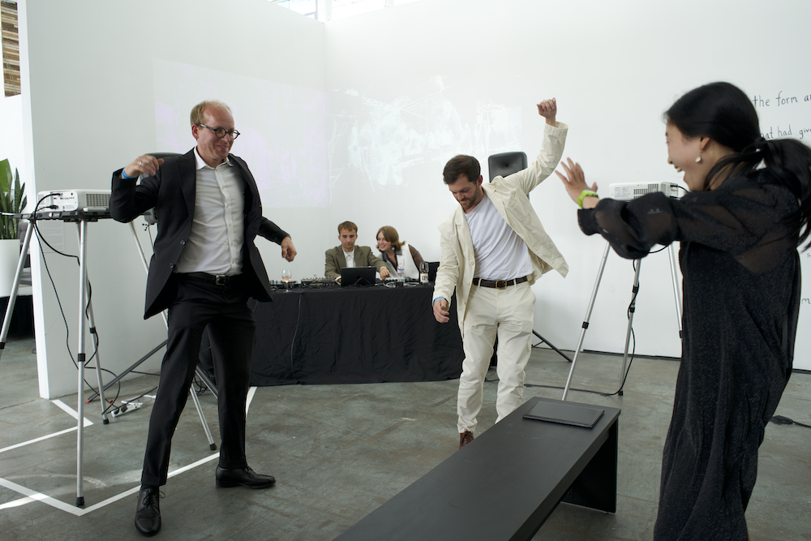

Projects
Lines of Flight (2022)


audiovisual performance with 2 channel projection
Lines of Flight is an actively listening room where a stack of sensors, software, machine learning plugins, and cameras take in the subtle movements of bodies and the environmental conditions to form a kind of distributed instrument. We offer deepListening as a musical co-creative relationship wherein neither human nor machine is fully reducible to itself anymore. By emphasizing relational processes over output, listening becomes a mode of relation between agents that forces each to attend to the other and adjust their output accordingly. This performance tries to move beyond a mode of creation that enlists other intelligences as mere tools – it is not instantiating the end or ideal mode of relating humans to machines. Rather, we are using the tools at our disposal with all their limitations in order to expose precisely where these tools foreclose meaningful co-creative relationships, and to gesture toward how such products might be improved, rethought, and revolutionized to produce humans and machines, and indeed sound itself, differently.